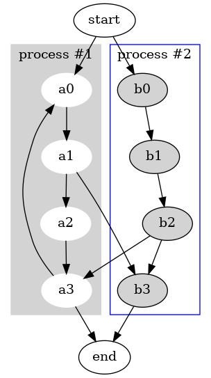

Basic example
$graph = new Graphviz\Digraph();
$graph
->subgraph('cluster_0')
->set('style', 'filled')
->set('color', 'lightgrey')
->attr('node', ['style' => 'filled', 'color' => 'white'])
->edge(['a0', 'a1', 'a2', 'a3'])
->set('label', 'process #1')
->end()
->subgraph('cluster_1')
->attr('node', ['style' => 'filled'])
->edge(['b0', 'b1', 'b2', 'b3'])
->set('label', 'process #2')
->set('color', 'blue')
->end()
->edge(['start', 'a0'])
->edge(['start', 'b0'])
->edge(['a1', 'b3'])
->edge(['b2', 'a3'])
->edge(['a3', 'a0'])
->edge(['a3', 'end'])
->edge(['b3', 'end'])
;
